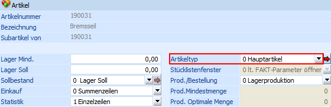
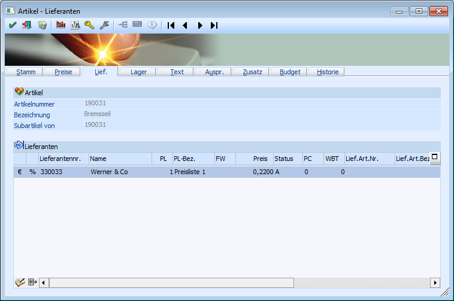

Sollte es sich bei der Komponente ebenfalls um einen Produktionsartikel handeln, dann müssen die Einstellungen wie im Kapitel "Artikelstamm - Produktionsartikel (Halbfertig- und Fertigprodukte)" getroffen werden.
Bei normalen Artikeln muss im Register "Lager", welches über den Menüpunkt
1 WinLine FAKT
1 Stammdaten
1 Artikelstamm
1 Artikel
erreicht wird, das Feld "Artikeltyp" eingestellt werden.
Ø Artikeltyp
An dieser Stelle muss Typ "0 - Hauptartikel" eingetragen werden. Nur so ist sichergestellt, dass der Artikel im Zuge des Einkaufes beschafft wird, sobald für diesen ein Bedarf aus dem Bereich der Produktion gemeldet wird.

Zusätzlich müssen für den Einkauf im Register "Lieferanten" hinterlegt werden, wo der Artikel beschafft werden kann (nähere Informationen zu der Hinterlegung siehe Kapitel "Artikel - Lieferanten").
